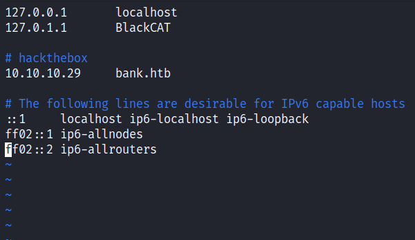
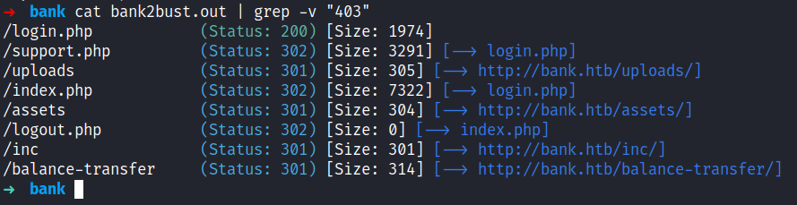
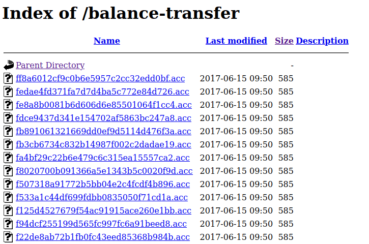
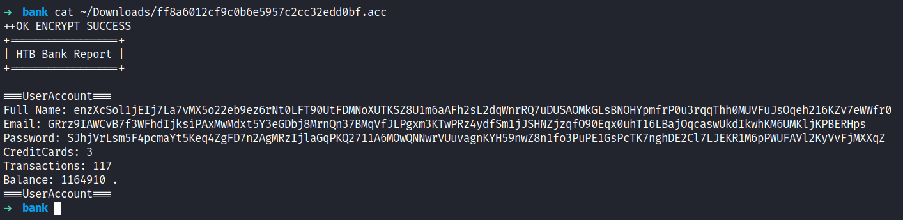
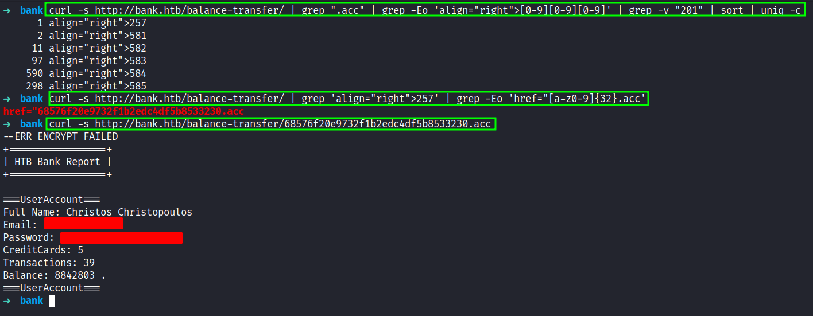
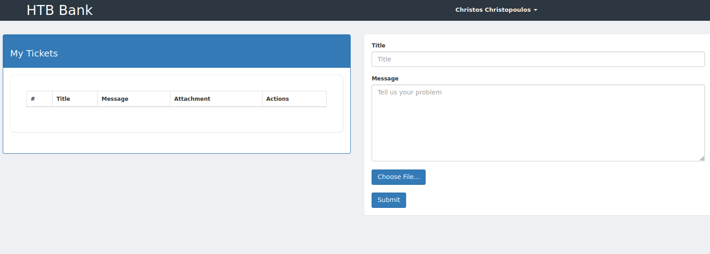
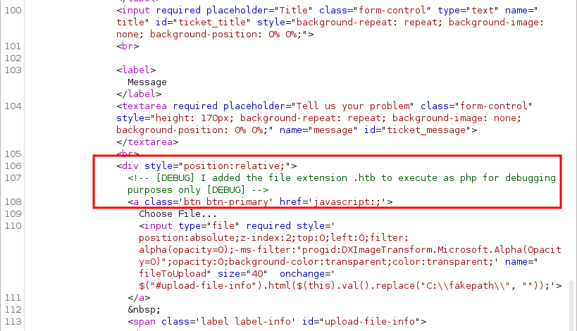
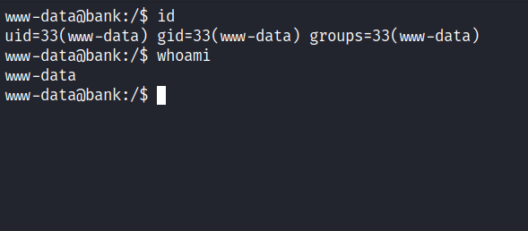
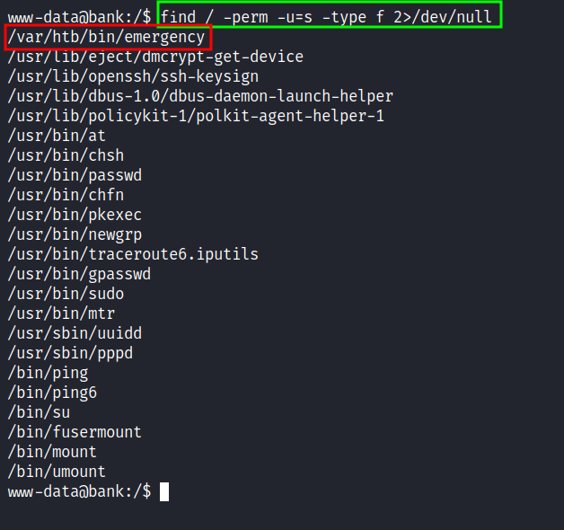
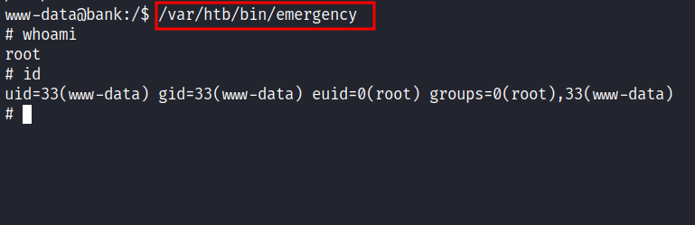

HackTheBox - Bank Writeup
Table of Contents
Nmap
Like always, I’m going to scan the IP address by using nmap but I’m going to scan the full port first. Then, I’m going to scan the only open ports.
nmap -p- --min-rate=10000 10.10.10.29
nmap -p22,53,80 -sCV -oN nmap/bank 10.10.10.29
22/tcp open ssh OpenSSH 6.6.1p1 Ubuntu 2ubuntu2.8 (Ubuntu Linux; protocol 2.0)
| ssh-hostkey:
| 1024 08eed030d545e459db4d54a8dc5cef15 (DSA)
| 2048 b8e015482d0df0f17333b78164084a91 (RSA)
| 256 a04c94d17b6ea8fd07fe11eb88d51665 (ECDSA)
|_ 256 2d794430c8bb5e8f07cf5b72efa16d67 (ED25519)
53/tcp open domain ISC BIND 9.9.5-3ubuntu0.14 (Ubuntu Linux)
| dns-nsid:
|_ bind.version: 9.9.5-3ubuntu0.14-Ubuntu
80/tcp open http Apache httpd 2.4.7 ((Ubuntu))
|_http-title: Apache2 Ubuntu Default Page: It works
|_http-server-header: Apache/2.4.7 (Ubuntu)
Service Info: OS: Linux; CPE: cpe:/o:linux:linux_kernel
The nmap scan result is completed. Looks like, this machine has a web server running on Apache and this is an Ubuntu machine. Also, port 53 is open and the scan results did not reveal any information about the domain/hostname. So, I’m going to add bank.htb into my /etc/hosts file just in case.

Http: bank.htb
I already add the IP address into the /etc/hosts file but I’m eager to check the IP address in the URL. When I checked, I’m greeted by the apache default installation page. However, when I navigate to the bank.htb I’ve been greeted with the login page. That’s interesting because nmap did not find any results about it.

Gobuster
Since this is a php webserver, I’m going to run gobuster with the -x flag for looking up only .php extensions. To be honest, this part is making me lose my mind because the directories that I found are not interesting at all. So, I’m going to the login page again and tried sql injection and nothing comeback. Turns out, some are not in raft wordlists, and that wordlist is the one that I love the most using it. However, when I used the directory-list-2.3-medium.txt wordlist, something interesting popped up.

Http: /balance-transfer
That directory is called /balance-transfer and it has a bunch of files with .acc extensions on it. Since this is a bank machine and it has a bank login page. So, I assumed this is the user account file. When I clicked on one of the files, it automatically download it.

Upon expecting the file, I’m right. It contains user account information such as name, email, password, and balance with all the private info encrypted. I’ll try to crack it but unfortunately, it can’t be cracked. Hmmm

Then, I navigate back to the /balance-transfer directory and click the Size filter on top, and found the only file that has an insignificant less size than the others. However, I want to be “leet” today by sorting those files size out by using a terminal. Why not ;)

The first command, will count the size of the file and sorting out by unique count. Then, I’m trying to grep the file name by that size 257 and I’m making the curl request to the file and got the user information to expose because this file seems it’s failed to be encrypted.
Foothold: upload
Now, I have the credentials that I needed. So, I’m going ahead to the login page, and voila. Success!

Looks like, just a simple bank account page, by clicking on Support on the left navigation bar. I’ve been greeted by a support ticket page where I can upload a file to it. Since this is a php website I’ll try uploading the reverse shell and it’s shouting at me says “image file only”.

So, I fire up burpsuite and tried a bunch of extensions and hoping that I can bypass it but unfortunately all failed. However, when I looked at the request I found these interesting comments. It’s says “to execute php file, must use .htb extension”. Without time wasted, I’m uploading the php reverse shell with the .htb extension.

PrivEsc: SUID
Nice! I’m in as a www-data user and the best thing to do is upgrade my shell. Then, I’ll try to enumerate the sudo permissions by running this command sudo -l. However, it required the password for this user that I did not have it.

So, I end up checking the SUID binaries and found an interesting file called emergency that is located at /var/htb/bin which is not native to linux system files and directories.

Root
I’m excited to run it and hope it gets me the root shell. Without further ado, I executed it, and BOOM!

I’m root.